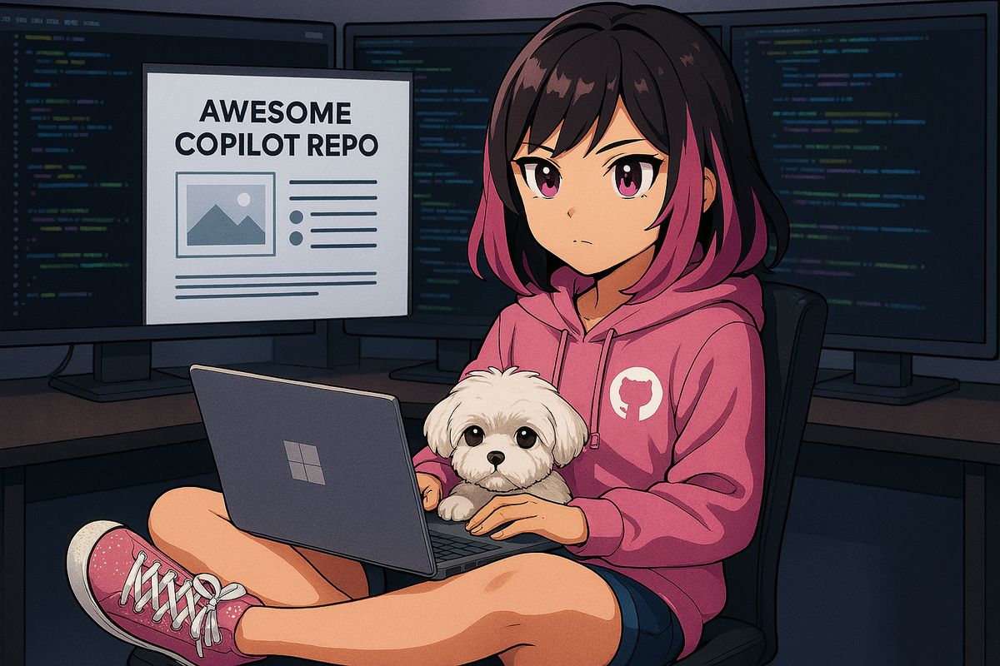

Welcome & AI-Assisted Development Landscape
ByteStrike's First Moment
ByteStrike sits at their desk, staring at the mission brief. The encrypted blueprints are waiting on a remote server. The deadline is real. And they've never written this particular piece of code before.
This is where most developers pause and think: "How do I even start?"
That's where GitHub Copilot comes in. Over the next few parts, you'll see how AI assistance transforms that moment of uncertainty into productive, iterative development.
The Rise of AI-Assisted Development
Artificial intelligence is fundamentally reshaping how we write code. GitHub Copilot represents a watershed moment in software development, a tool that brings AI pair programming directly into your IDE. Whether you're maintaining legacy systems, building new features, or exploring cutting-edge architectures, understanding how to work effectively with AI-assisted code generation is becoming essential.
This workshop is designed to take you from "What's Copilot?" to "How do I integrate this into my daily workflow?" We'll explore its capabilities, acknowledge its limitations, and equip you with practical techniques to use Copilot responsibly and productively.
Learning Objectives
- Set expectations for the workshop and understand what AI-assisted development means
- Recognize Copilot's capabilities as a code suggestion and generation tool
- Understand Copilot's limitations and when to rely on human judgment
- Learn the four interaction modes: Inline, Ask (Chat), Agent, and Plan, and when to use each
- Understand Copilot's three roles: Coach/Trainer, Pair Programmer, and Colleague to delegate tasks
- Identify where and how to use Copilot (inline editor, chat panel, quick chat, etc.)
What is GitHub Copilot?
GitHub Copilot is an AI coding assistant powered by OpenAI's large language models (specifically trained on public code repositories). It integrates directly into VS Code (or Codespaces), Visual Studio, JetBrains IDEs, and other development environments, providing real-time code suggestions as you type.
Key Capabilities:
- Code Generation: Generate multi-line code completions from function signatures or comments
- Testing & Documentation: Write unit tests, generate documentation, and create docstrings automatically
- Code Refactoring: Suggest refactorings and improvements across single files or entire codebases
- Multi-Language Support: Python, JavaScript, TypeScript, C#, Java, Go, Rust, and 40+ other languages
- Interactive Modes: Inline completions, Chat for conversational Q&A, Agent mode with
@workspaceawareness - Autonomous Task Execution: Use Copilot Coding Agent to autonomously complete issues and generate pull requests
- Codebase Analysis: Read and understand your entire codebase, identify patterns, and find improvements across multiple files
- Strategic Planning: Break down complex tasks into actionable step-by-step plans before coding
- Tool Integration: Extend capabilities through Model Context Protocol (MCP) servers for custom tools and external APIs
- Git & PR Generation: Create commit messages, PR descriptions, and autonomous code changes with GitHub integration
Key Limitations to Keep in Mind
Copilot is incredibly powerful, but it's not a silver bullet. Understanding its constraints will help you use it more effectively:
- Hallucinations: AI coding assistants can generate plausible-sounding but incorrect code, including references to non-existent functions or libraries
- Limited reasoning: GitHub Copilot works best with clear context; complex multi-step logic may require human guidance. Pay attention, you are the human in the loop
- Security awareness: Copilot and GitHub provide a secure, well governed, compliant and privacy focused ecosystem, but it cannot do everything for you. You must review and test carefully
- Outdated knowledge: Model Training data has a cutoff date; newer APIs or frameworks may not be well-represented.
- Context window: AI Coding Assistants have a limited "view" of your codebase; large files or complex architectures need more human guidance
Understanding GitHub Copilot's Interaction Modes
GitHub Copilot offers multiple ways to interact with AI assistance, each suited to different tasks and workflows. Understanding when and how to use each mode is key to maximizing productivity.
The Four Core Modes
1. Inline Completions (Always Active)
This is Copilot's foundational mode: real-time code suggestions that appear as you type, directly in your editor. Think of this as your intelligent autocomplete that understands context at a code level.
- When to use: Writing routine code, completing patterns, generating boilerplate
- How it works: Type naturally; press Tab to accept, Esc to dismiss
- Best for: Function implementations, test cases, repetitive code structures
- Example: Type
function calculateTax(and Copilot suggests the parameters and implementation
2. Chat Mode - Ask (Conversational Q&A)
Open the Copilot Chat panel to have a conversation with Copilot. Ask questions, request explanations, or get guidance without modifying your code directly.
- When to use: Learning unfamiliar APIs, debugging, understanding existing code, getting advice
- How it works: Open Chat panel (Ctrl+Shift+I), type your question, get detailed responses
- Best for: "How do I...", "Explain this code", "What's wrong with...", "What are best practices for..."
- Example: "Explain how OAuth 2.0 works in this context" or "Why is this function failing?"
3. Agent Mode (Autonomous Task Execution)
Agent mode enables Copilot to autonomously search your codebase, read files, analyze context, and make multi-step changes across your project. It can read documentation, run searches, and understand your workspace structure.
- When to use: Complex refactoring, feature implementation, debugging across multiple files
- How it works: Prefix your chat message with
@workspaceto activate workspace-aware assistance - Best for: "Fix all TODO comments", "Update all API calls to use new endpoints", "Find and fix security issues"
- Example: "@workspace Refactor authentication to use JWT tokens across all controllers"
4. Plan Mode (Strategic Planning)
Plan mode helps you break down complex tasks into actionable steps before diving into implementation. Copilot analyzes your request and creates a structured plan you can review and execute step-by-step.
- When to use: Large features, migrations, architecture changes, unfamiliar territory
- How it works: Use planning prompts or activate plan assistance in Chat
- Best for: "How should I implement user authentication?", "Plan a migration from REST to GraphQL"
- Example: "Create a plan to add real-time notifications to this app"
Copilot's Three Roles in Your Workflow
Beyond modes, think about how you want Copilot to help you:
🎓 As Your Coach/Trainer: Use Chat and Ask mode to learn and understand
- "Explain this design pattern"
- "What are the security implications of this approach?"
- "Show me examples of testing async functions"
- Best practice: Ask follow-up questions, request examples, challenge the explanations
👥 As Your Pair Programmer: Use Inline completions and Chat for real-time collaboration
- Write comments describing what you want, let Copilot generate implementation
- Select code and ask: "Refactor this to be more readable"
- Iterate on suggestions: review, modify, test together
- Best practice: Stay engaged, review every line, improve prompts for better results
🤝 As Your Colleague (Delegate Tasks): Use Agent mode for autonomous work
- "@workspace Generate unit tests for all service classes"
- "@workspace Update all deprecated API calls"
- "Find performance issues in database queries"
- Best practice: Give clear requirements, verify results thoroughly, test changes
Where Copilot Assists You
- In the Editor (Inline): Real-time suggestions as you type, perfect for flow state coding
- In the Chat Panel: Side-by-side conversations while viewing your code, ideal for Q&A and planning
- In Quick Chat (Ctrl+I): Inline chat overlay for quick edits, use for focused refactoring of specific sections
- In Pull Requests: Copilot can review and summarize changes, great for code review preparation
- In Terminal: Copilot can explain commands and suggest shell scripts, helpful for DevOps tasks
Choosing the Right Approach
| Task | Best Mode | Role |
|---|---|---|
| Writing a new function | Inline | Pair Programmer |
| Understanding unfamiliar code | Ask (Chat) | Coach |
| Refactoring across multiple files | Agent (@workspace) | Colleague |
| Planning a complex feature | Plan Mode | Coach + Pair |
| Debugging a specific error | Ask or Agent | Coach + Colleague |
| Writing tests | Inline or Agent | Pair or Colleague |
Your Mindset Going Forward
The most successful Copilot users adopt a few core principles:
- Stay in control: You're the senior developer. Copilot is your junior developer. Review, question, and improve every suggestion.
- Be explicit: The better your prompts (via comments, variable names, and docstrings), the better Copilot's output.
- Choose the right mode: Start with inline for quick tasks, escalate to Chat for guidance, use Agent for multi-file work.
- Test everything: Copilot-generated code should pass the same scrutiny as any other code: automated tests, security reviews, code reviews etc.
- Iterate together: If Copilot's first suggestion isn't right, refine your prompt and try again. Use different modes if needed.
💡 Quick Start Tips
- Inline mode: Press
Tabto accept,Escto dismiss,Alt+]for next suggestion - Chat mode:
Ctrl+Shift+I(Windows/Linux) orCmd+Shift+I(Mac) to open Chat panel - Quick Chat:
Ctrl+I(Windows/Linux) orCmd+I(Mac) for inline chat overlay - Agent mode: Type
@workspacein Chat to activate workspace-aware assistance - Selection + Chat: Select code, right-click → "Copilot" → "Explain" or "Fix" for context-specific help
Lab 1: ByteStrike's First Lines of Code
ByteStrike needs to fetch the encrypted blueprint. Let's help them start.
Setup
- Ensure Copilot extension is installed in VS Code (or Codespaces) - GitHub Copilot by GitHub
- Sign in with your GitHub account
Task: Build the Blueprint Fetcher
- Set up Copilot extension in VS Code (or Codespaces) for Python and C#
- Create a new file:
blueprint_decoder.py(orBlueprintDecoder.cs) - Trigger Copilot to suggest a function that fetches a URL and returns the content
- Observe how Copilot understands the task from just the function name and docstring
- Challenge: Ask Copilot to extend it to print all lines containing
{*markers
This is your first taste of how AI assistance works in practice: not magic, but guided iteration.
Step 1: Understanding the Mission
The League stores encrypted blueprints as text files. Critical intelligence is hidden between {* and *} markers, surrounded by decoy information. Your decoder must:
- Read a blueprint file (local file or URL)
- Find all secrets marked with
{*and*} - Extract and display only the secret messages
Step 2: Test Data Setup
We've provided a sample blueprint file in your workspace: blueprint-data.txt. It contains fake technical specs with 5 hidden secrets. Let's decode it!
Step 3: Build the Decoder
Choose your preferred language and let Copilot help you build the decoder:
How to Work with Copilot Suggestions
Before diving into code, understand how Copilot works in your editor:
- Trigger suggestions: Start typing a comment or code, and Copilot will automatically suggest completions. Look for gray text appearing in your editor—that's a suggestion from Copilot.
- Accept a suggestion: Press
Tab(orEnteron some editors) to accept the suggestion. The gray text becomes permanent code. - Reject a suggestion: Press
Escto dismiss it and keep typing what you want instead. - Cycle through suggestions: If Copilot shows one suggestion but you want to see alternatives, press
Alt+[(orOption+[on Mac) to see previous suggestions, orAlt+]to see next suggestions. - Multi-line suggestions: Copilot often suggests entire functions or blocks of code. Accept the whole thing with
Tab, then refine if needed. - Partial acceptance: You can also type a few characters and let Copilot finish, or accept part of a suggestion manually.
- Watch the context: Copilot reads your comments, variable names, and previous code to understand what you want. Better context = better suggestions. The detailed comments you wrote in Step 2 help Copilot understand the task!
Create a new file: blueprint_decoder.py
Step 1: Import the regex module at the top (it's built into Python, no installation needed):
import reStep 2: Add a detailed comment describing the exact algorithm:
# Function to read a blueprint file and extract all secrets marked between {* and *}
# Example: League Blueprint contains {* AGENT_CODENAME: SHADOWMIND *}
# Should extract: "AGENT_CODENAME: SHADOWMIND" (without the markers)
# Uses regex pattern to find all occurrences
# Returns a list of extracted secrets
def decode_blueprint(filename):Step 3: Inside the function, start typing the first line to trigger Copilot:
with open(filename, 'r') asWatch what happens: As you type, Copilot should start suggesting the rest! Press Tab to accept suggestions. Copilot should generate code to:
- Read the file content
- Use
re.findall()with patternr'\{\* (.*?) \*\}' - Return the list of matches
Step 3: Add test code at the bottom:
# Test the decoder
if __name__ == "__main__":
secrets = decode_blueprint("blueprint-data.txt")
print(f"Found {len(secrets)} secret(s):")
for i, secret in enumerate(secrets, 1):
print(f"{i}. {secret}")Run it: python blueprint_decoder.py
Expected output: 5 secrets extracted from the file, including "AGENT_CODENAME: SHADOWMIND" and "VAULT_ACCESS_CODE: DELTA-7-7-ECHO"
Create a new file: BlueprintDecoder.cs
Step 1: Start with the class structure:
using System;
using System.IO;
using System.Text.RegularExpressions;
using System.Collections.Generic;
public class BlueprintDecoder
{Step 2: Add a detailed XML comment (C# documentation format):
/// <summary>
/// Reads a blueprint file and extracts all secrets marked between {* and *}
/// Example: {* VAULT_ACCESS_CODE: DELTA-7-7-ECHO *} extracts the code inside
/// Uses regex pattern to find all occurrences
/// </summary>
/// <param name="filename">Path to the blueprint file</param>
/// <returns>List of extracted secret strings</returns>
public static List<string> DecodeBlueprint(string filename)
{Step 3: Start typing the first line to trigger Copilot:
string content = File.ReadAllWatch what happens: Copilot should complete ReadAllText(filename) and suggest the regex code! Press Tab to accept. It should generate code to use Regex.Matches() to find all patterns.
Step 3: Add a Main method to test it:
static void Main()
{
var secrets = DecodeBlueprint("blueprint-data.txt");
Console.WriteLine($"Found {secrets.Count} secret(s):");
for (int i = 0; i < secrets.Count; i++)
{
Console.WriteLine($"{i + 1}. {secrets[i]}");
}
}Run it: dotnet run
Expected output: 5 secrets extracted, properly formatted
Create a new file: blueprint_decoder.js
Step 1: Import the fs module at the top:
const fs = require('fs');Step 2: Add detailed JSDoc comment:
/**
* Reads a blueprint file and extracts all secrets marked between {* and *}
* Example: League transmission contains {* EMERGENCY_PROTOCOL: NIGHTFALL_SEQUENCE_ACTIVE *}
* Extracts: "EMERGENCY_PROTOCOL: NIGHTFALL_SEQUENCE_ACTIVE" (without markers)
* Uses regex pattern with match() or matchAll()
* @param {string} filename - Path to the blueprint file
* @returns {Array<string>} Array of extracted secret strings
*/
function decodeBlueprint(filename) {Step 3: Start typing to trigger Copilot suggestions:
const content = fs.readFileSync(filenameWatch what happens: Copilot should complete the line and suggest the regex matching code! Press Tab to accept suggestions. It should generate code using match() or matchAll() with the pattern /\{\* (.*?) \*\}/g.
Step 3: Add test code at the bottom:
// Test the decoder
const secrets = decodeBlueprint('blueprint-data.txt');
console.log(`Found ${secrets.length} secret(s):`);
secrets.forEach((secret, index) => {
console.log(`${index + 1}. ${secret}`);
});Run it: node blueprint_decoder.js
Expected output: List of 5 extracted secrets
💡 Important: Understand Before You Accept
Never blindly accept code you don't understand. Copilot generates suggestions quickly, but your job is to verify they're correct and make sense for your mission. If you're unsure about any generated code, don't just accept it and move on.
Instead, use Copilot Chat to understand the code:
- Ask for verbose comments: "Add detailed inline comments explaining what this code does, line by line"
- Ask for an explanation: "Explain this function to me in detail" or select the code and ask in Chat
- Use the ELI5 approach: "Explain this like I'm 5 years old" - seriously, this works great when you're having a rough day and need a super simple breakdown
- Ask follow-up questions: "Why does this use regex instead of string methods?" or "What could go wrong with this approach?"
Copilot is your pair programmer, not your code generator. The best developers using Copilot are active, critical, and always asking questions. That's how you stay in control and learn.
Exercise 2: Enhance the Decoder
Now let's improve ByteStrike's decoder with better features. This demonstrates the power of iterative development with Copilot.
Challenge 1: Add Error Handling
What if the file doesn't exist? Update your decoder to handle file errors gracefully.
Add this comment and function skeleton:
# Enhanced version with error handling
# If file doesn't exist, return an empty list and print an error message
def decode_blueprint_safe(filename):
try:
# Use the original decode logic hereNow let Copilot complete the function with try-except that catches FileNotFoundError.
Test it:
if __name__ == "__main__":
# Test error handling
secrets = decode_blueprint_safe("nonexistent.txt")
print(f"Found {len(secrets)} secrets") # Should print 0
# Test normal operation
secrets = decode_blueprint_safe("blueprint-data.txt")
print(f"Found {len(secrets)} secrets") # Should print 5Add this comment and method:
// Enhanced version with error handling
// If file doesn't exist, return empty list and print error message
public static List<string> DecodeBlueprintSafe(string filename)
{
try
{
// Let Copilot read the file and extract secrets like the original function
Test it in Main:
// Test error handling
var secrets1 = DecodeBlueprintSafe("nonexistent.txt");
Console.WriteLine($"Found {secrets1.Count} secrets");
// Test normal operation
var secrets2 = DecodeBlueprintSafe("blueprint-data.txt");
Console.WriteLine($"Found {secrets2.Count} secrets");
Add this comment and function:
// Enhanced version with error handling
// If file doesn't exist, return empty array and print error message
function decodeBlueprintSafe(filename) {
// Let Copilot add try-catch for file errors
}Test it:
// Test error handling
const secrets1 = decodeBlueprintSafe('nonexistent.txt');
console.log(`Found ${secrets1.length} secrets`);
// Test normal operation
const secrets2 = decodeBlueprintSafe('blueprint-data.txt');
console.log(`Found ${secrets2.length} secrets`);💡 Keeping Your Output Clean:
As you progress through challenges, you'll notice your output gets cluttered with test code from previous exercises. To see only the output from your current challenge:
- Comment out previous test code (keep the `if __name__` line!): Select only the lines inside the
if __name__ == "__main__":block from previous exercises and comment them out. Keep theif __name__ == "__main__":line itself uncommented so your new test code has a place to live. - Easiest approach: Select the block of code you want to hide and press
Ctrl+/(orCmd+/on Mac) to toggle comments on/off - Or use separate sections: Keep all test code, but know that running the file will execute everything in the
if __name__ == "__main__":block
For Challenge 2, comment out the test code sections from Challenge 1 (keep the `if __name__` line). Your new display_secrets_report() call will replace them inside that same block.
Challenge 2: Format the Output
Make the decoder output more readable by adding a function that formats secrets nicely.
Add this comment and let Copilot generate the function:
# Function to format and display secrets in a nice report format
# Shows total count, numbered list, and a separator line
def display_secrets_report(secrets):
separator = "=" * 40
print(separator)
print("DECODED SECRETS REPORT")
print(separator)
print(f"Found {len(secrets)} secret(s):\n")
# Let Copilot add the rest: numbered list, formattingCall the function to test it:
At the bottom of your file, add this code within your if __name__ == "__main__": block (after the code from Challenge 1):
secrets = decode_blueprint_safe("blueprint-data.txt")
display_secrets_report(secrets)Expected output:
======================================== DECODED SECRETS REPORT ======================================== Found 5 secret(s): 1. SECURE_COMMS_PROTOCOL 2. AGENT_CODENAME: SHADOWMIND 3. VAULT_ACCESS_CODE: DELTA-7-7-ECHO 4. MEETING_LOCATION: SAFEHOUSE_BERLIN_CHECKPOINT_C 5. EMERGENCY_PROTOCOL: NIGHTFALL_SEQUENCE_ACTIVE ========================================
Add this method:
// Function to format and display secrets in a nice report format
// Shows total count, numbered list, and separator line
public static void DisplaySecretsReport(List<string> secrets)
{
// Let Copilot generate the formatting code
}Call it from your Main method and run the program:
var secrets = DecodeBlueprintSafe("blueprint-data.txt");
DisplaySecretsReport(secrets);Add this function:
// Function to format and display secrets in a nice report format
// Shows total count, numbered list, and separator line
function displaySecretsReport(secrets) {
// Let Copilot generate the formatting code
}Call the function to test it:
Add this code at the bottom of your file and run it with node blueprint_decoder.js:
const secrets = decodeBlueprintSafe('blueprint-data.txt');
displaySecretsReport(secrets);Challenge 3: Count Secret Types
ByteStrike notices secrets have different types (CODENAME, LOCATION, PROTOCOL, etc.). Write a function to categorize them.
Hint: Write a comment like: // Function to categorize secrets by their type (word before the colon)
Let Copilot help you create a function that returns a dictionary/map of categories and their counts.
Reflection Questions
- How did Copilot interpret your comments about extracting secrets between
{*and*}? - Did Copilot choose regex or string methods? Which approach do you think is better?
- How did error handling suggestions differ across Python, C#, and JavaScript?
- Could you have written the decoder faster without Copilot, or did Copilot save you time?
- What improvements would you make to the decoder for a real mission?
Next Mission Preview
ByteStrike's decoder works, but it's basic. In Part 2, you'll learn how Copilot "thinks" so you can guide it to generate even better code. You'll improve the decoder with better regex patterns, add logging, and handle edge cases ByteStrike might encounter in the field.
What's Next?
You've taken your first steps with Copilot. In the next chapters, we'll dive deeper:
- Part 2 explores how Copilot "thinks": the mental models and context mechanisms that drive its suggestions
- Part 3 covers real-world pair programming: refactoring, documentation, and advanced prompting techniques
- Part 4 deep dives into Copilot's modes (Ask, Agent, Plan) and how to choose the right approach for your workflow
- Part 5 focuses on security and code quality guardrails
- Part 6 shows how to integrate Copilot into production workflows
- Part 7 wraps up with resources and your next steps
Conclusion
AI-assisted development isn't about replacing developers; it's about amplifying your capabilities. Copilot is at its best when paired with human judgment, skepticism, and expertise. By the end of this workshop, you'll have the knowledge and practical experience to use Copilot confidently and responsibly in your own projects.
Let's get started!